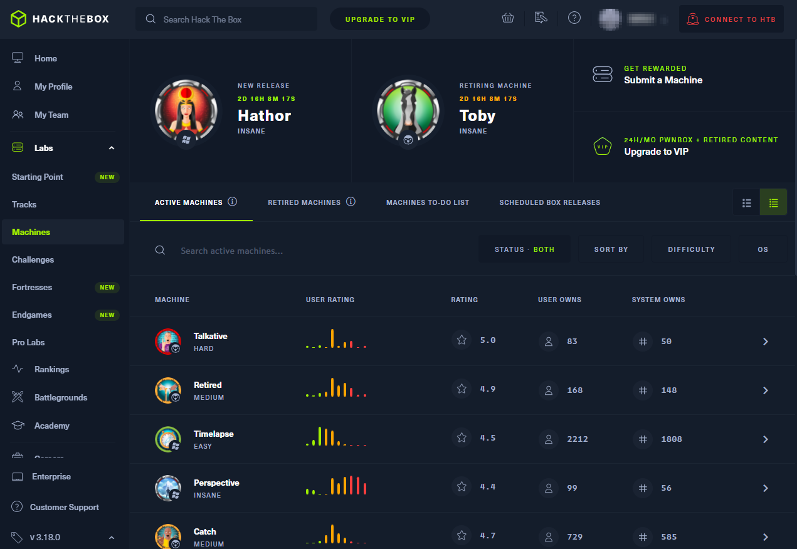
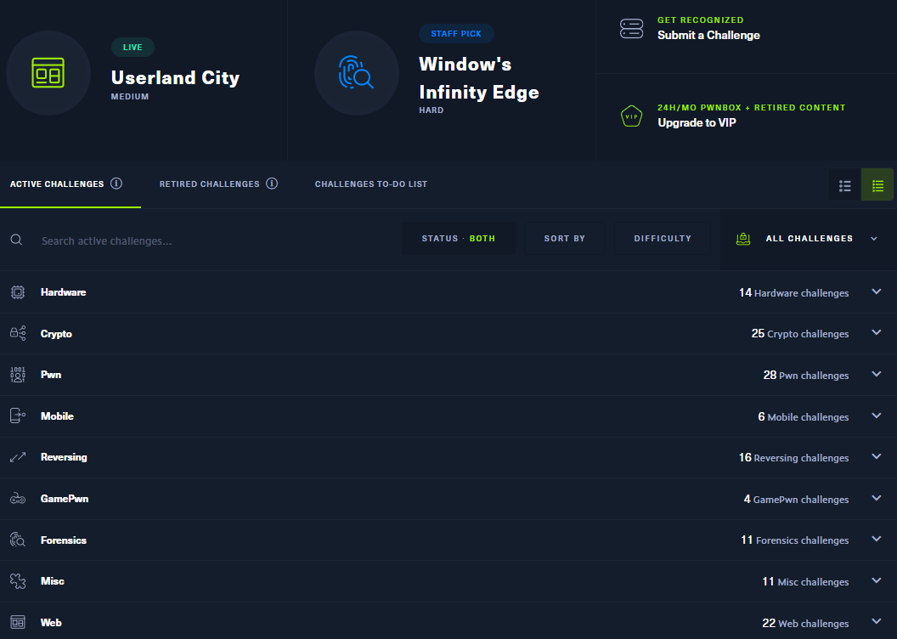

HTB: HackTheBox
Here is the URL to HTB: https://www.hackthebox.com/
Table of contents
I recommend trying out HTB after other starting options (like TryHackMe). This is purely because HTB may be too large of a leap regarding the difficulty of some boxes. The easiest boxes also require membership.
1. What is HTB?
HTB is an excellent platform for practicing your penetration skills through the use of CTF (capture the flag).
It’s a platform based around hosting test machines for users to try exploits against and
try to get root user (aka full control).
The user’s main objective is to access the root
flag, flag.txt, that only the root user can access.
The reason for this is to try and
simulate a real attack – flags are supposed to represent the sensitivity of documents you can access – you
got the user flag? Well done, you managed to access the user’s files. Now go get root access and get root files!
Here is an example of what HTB looks like. Notice the difficulty, user ratings and 'System owns'

HTB consists of attacking a machine (you have been authorized to attack) with the intent
of trying to get a user foothold in the target.
Once done, your goal would be to look for the flag
(a text file with a hash) and enter it into the website for points (to make the activity a little bit
more competitive).
With the user flag collected, you would then move onto the next stage – to escalate and get to
root user (and then the root user flag).
HTB has a very large range of boxes, and on a regular basis new machines are
added to be attacked.
Some machines are removed, however, and added to a membership exclusive pool called 'retired'.
Some retired machines do become free every now and then.
HTB also has 'challenges'. They are mostly quick tasks you can do. I recommend doing them casually. Just like the machines,
you can find 'active' challenges and 'retired' challenges (which also require VIP). From the screenshot below, you can see
a large range of different types of challenges.

2. Issues with HTB To Contents Table
The main issue I have with HTB is – if you are a beginner pen tester, any box you touch
(including easy ratings) there is a high chance you will not know how to do it.
This is because there are so many
vulnerabilities and exploitation techniques around that it's impossible for a beginner to know them all at the
start so you will get confused, and with no hints available you would not know what direction to move towards (and possibly
what area of vulnerabilities to look towards).
The HTB activities can also be quite creative, so in some cases the creator may intentionally set up many pitfalls to confuse you,
or they may alter a vulnerability so you would need to alter a exploitation program to make it work.
As such, a new
person may get fed up if they keep getting stuck and may eventually give up with pen testing as a whole (HTB also has a policy with
‘live machines’ that you cannot share walkthroughs or help). And so HTB can be a coin flip activity for newbies, if they
struggle too early with it they may get fed up with pen testing and leave.
If you do wish to do HTB, I recommend using a guide instead of doing it blind and try to learn from the walkthrough, it will help prepare and solidify your knowledge as some of the content will be relevant in real pen tests.
One issue with HTB has is, most of the boxes are blocked behind a membership paywall (they are known as ‘retired’).
The price is around £10 for VIP a month to access it.
This is a good deal, however if you cannot do the box, it may
be best to wait a bit.The new boxes are always free
(but remember – no guides available and stay away from hard boxes!).
Sometimes retired boxes are rotated into the free machine pool, so keep an eye out for that!
HTB also
offers VIP+, the main difference it will make to you is for an extra £5 a month your instance of the machine will be
personal not shared (I've never had any issue with shared boxes). I believe the normal VIP is more than enough.
3. Overall To Contents Table
I believe HTB is one of the best CTF platforms around, and although newbies can try to use HTB I believe they will struggle. As such its best if they stay away from HTB until users become more confident. I believe a platform like TryHackMe is more suitable to be done before HTB due to how it more teaching oriented (and how it has CTFs that are easier to complete).